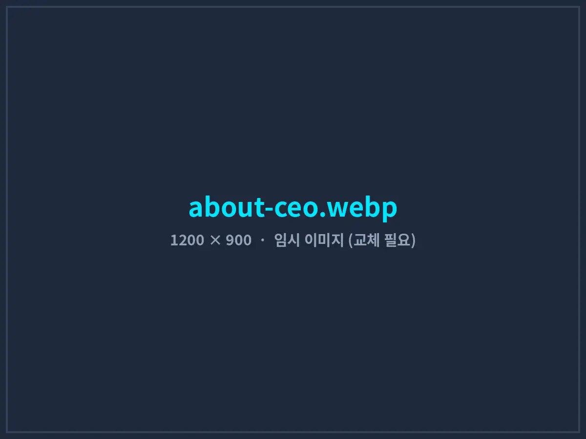
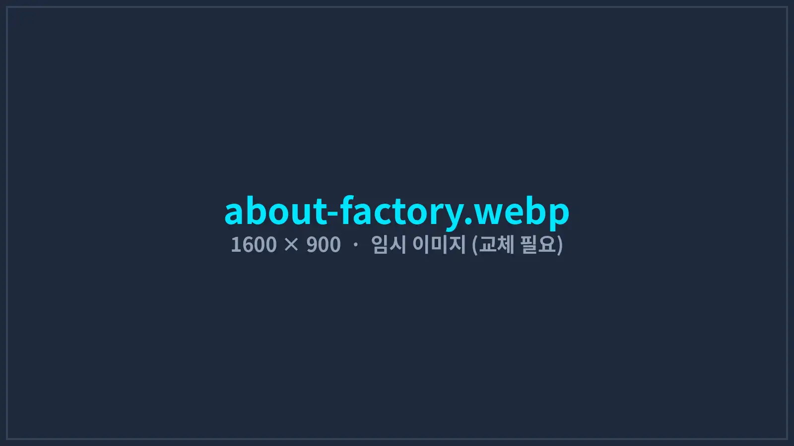

현장을 경험한 엔지니어가
직접 설계하고 끝까지 책임집니다
AI BASE LAB은 제조 현장, 무역·생산 관리, 소프트웨어 개발을 모두 거친 엔지니어가 운영하는 AI 자동화 소프트웨어 스튜디오입니다.
기술을 위한 기술이 아니라, 내일 아침 현장에서 바로 쓰이는 시스템을 만듭니다.
01대표 인사말

지난 20여 년 동안 엔지니어로, 그리고 제조 사업자로 일하며 가장 많이 본 장면은 “좋은 장비와 프로그램을 갖추고도 결국 사람이 그 사이를 메우는 모습”이었습니다. 측정값을 종이에 옮겨 적고, 프로그램 세 개를 번갈아 켜고, 밤새 모니터를 지키는 일들입니다.
중국 공장에서 한국 고객사의 제품을 양산하며 품질 클레임에 대응할 때도, 직접 유튜브 채널을 운영하며 영상을 만들 때도 문제는 같았습니다. 그래서 필요한 도구를 직접 만들기 시작했고, 그렇게 만든 프로그램이 오토튜브 Pro가 되었고, 여러 고객사의 생산라인과 사무실에서 쓰이는 시스템이 되었습니다.
AI BASE LAB은 규모가 큰 회사가 아닙니다. 대신 첫 상담부터 설계, 개발, 현장 설치, 유지보수까지 같은 엔지니어가 처음부터 끝까지 책임집니다. 요구사항이 중간에 전달되며 왜곡되지 않고, 문제가 생기면 누가 책임질지 따질 필요도 없습니다. 작게 시작해서 효과를 숫자로 확인하고, 그다음에 키우는 방식으로 고객사와 함께 가겠습니다.
AI BASE LAB 대표 엔지니어
02대표 약력
- 엔지니어링 · IT 경력 20년 이상 — 산업 설비 제어, 계측 장비 연동, 업무 시스템 개발
- 한·중 ODM 사업 운영 — 한국 브랜드사와 중국 제조사 간 제품 개발·공급사 협상·양산 품질 관리
- 음향기기 양산 공장 운영 — 사운드바, 포터블 블루투스 스피커 등 생산 및 출하 검사 라인 관리
- AI 자동화 소프트웨어 개발 — 영상 제작 자동화 프로그램 ‘오토튜브 Pro’ 개발·판매
- 금융 데이터 시스템 개발 — 키움증권·한국투자증권 API 기반 시세 관제, 스크리너, 자동매매 도구 개발
- 교육 콘텐츠 채널 운영 — AI 제작 파이프라인으로 경제·영어 교육 유튜브 채널 직접 운영
03연혁
- 2026
오토튜브 Pro 정식 판매 · 회사 홈페이지 개편
유튜브 영상 제작 자동화 프로그램 오토튜브 Pro 연간 라이선스 판매 시작. 한국어·영어 버전 제공.
- 2025
4개 분야 구축 레퍼런스 확보
음향기기 제조사 통합 검사 시스템(2월), 교육 콘텐츠 제작사 영상 제작 자동화(6월), 투자법인 자동매매 시스템(9월), 제조사 출하 검수 시스템(10월) 구축 착수.
- 2025
자사 교육 유튜브 채널 운영 시작
영어 학습 채널 ‘영어창고’와 경제 교육 채널 ‘매크로현미경’에 자체 AI 제작 파이프라인을 적용해 운영.
- 2024
AI BASE LAB 설립
생성형 AI, 로컬 AI 모델, 장비 연동 기술을 결합한 자동화 소프트웨어 개발 사업 시작.
- 2019
음향기기 양산 공장 운영
사운드바·포터블 스피커 ODM 생산 및 출하 검사 체계 구축.
- 2015
한·중 ODM 에이전시 사업 시작
한국 고객사와 중국 제조사를 연결해 제품 개발부터 양산, 품질 관리까지 대행.
- 2001
엔지니어 경력 시작
산업 설비 제어와 IT 시스템 개발 분야에서 엔지니어로 첫 경력 시작.
사업 영역
세 가지 사업은 따로 떨어져 있지 않습니다.
제조 현장 경험이 개발로, 개발 경험이 제품으로 이어집니다.
자체 소프트웨어 제품
영상 제작 자동화 프로그램 ‘오토튜브 Pro’를 개발·판매합니다. 대본 한 장으로 이미지, AI 음성, 자막, 편집 프로젝트까지 자동으로 만듭니다.

04회사 정보
| 회사명 | AI BASE LAB (AI베이스랩) |
| 설립 | 2024년 |
| 사업 분야 | AI 자동화 소프트웨어 개발, 산업용 장비 연동·검사 시스템, 금융 데이터 시스템, 소프트웨어 제품 판매, 제조 ODM 컨설팅 |
| 이메일 | contact@aibaselab.com |
| 지원 언어 | 한국어, 영어, 중국어(현장 작업자 화면) |
작게 시작해서, 확인하고, 키웁니다
1주 무료 현장 진단으로 자동화 효과를 먼저 확인해 보세요.